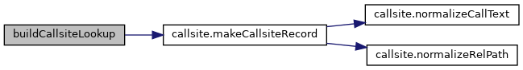

|
PCART
|
Bridge PCResolve analysis results into PCART CallsiteRecord format. More...
Functions | |
| def | buildCallsiteLookup (projPath, libName) |
| Build a CallsiteRecord lookup table from PCResolve analysis 从PCResolve分析结果构建CallsiteRecord查找表 More... | |
Bridge PCResolve analysis results into PCART CallsiteRecord format.
Converts PCResolve's cross-file ProjectAnalysis output into PCART's CallsiteRecord dictionaries, matching the return format of Extract/getCall.getCallFunction(). Supports libName filtering, caching by (projPath, libName), and graceful degradation when PCResolve is not installed. 将PCResolve的跨文件ProjectAnalysis结果转换为PCART的CallsiteRecord字典， 匹配Extract/getCall.getCallFunction()的返回格式。支持libName过滤、 按(projPath, libName)缓存，以及PCResolve未安装时的静默降级。
| def pcresolveBridge.buildCallsiteLookup | ( | projPath, | |
| libName | |||
| ) |
Build a CallsiteRecord lookup table from PCResolve analysis 从PCResolve分析结果构建CallsiteRecord查找表
Runs pcresolve.analyze_project() once per (projPath, libName) pair, filters results to calls matching the target library, and converts each ApiCall into a CallsiteRecord dict sorted by source position. Results are cached at module level for the lifetime of the process. 对每个(projPath, libName)对运行一次pcresolve.analyze_project()， 过滤匹配目标库的调用，将每个ApiCall转换为按源码位置排序的 CallsiteRecord字典。结果在模块级别缓存，进程生命周期内有效。
| projPath | Absolute path to the project root |
| libName | Target library name (e.g. "polars", "aiofiles") |
Definition at line 40 of file pcresolveBridge.py.
